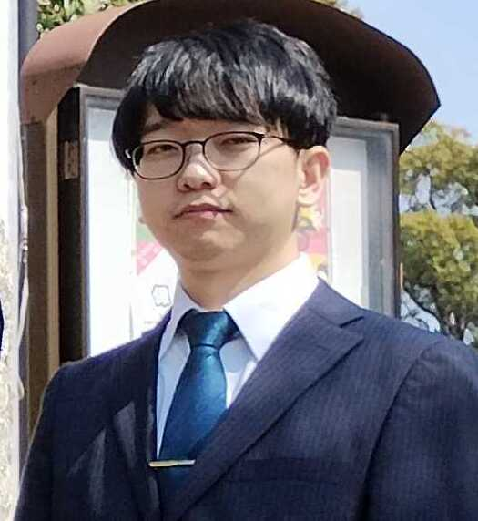

略歴
- 2020年3月 関西大学 システム理工学部 電気電子情報工学科（卒業）
- 2022年3月 関西大学大学院 理工学研究科 博士課程前期課程 システム理工学専攻（修了）
- 2024年6月 台湾中原大学（関西大学若手研究者海外研究活動）
- 2025年3月 関西大学大学院 理工学研究科 博士課程後期課程 総合理工学専攻 (修了)
- 2025年4月~ 岡山大学 工学部 情報・電気・数理データサイエンス系 医用情報ネットワーク学研究室 助教
研究分野
通信プロトコル，エッジコンピューティング，耐障害性ネットワーク，クラウドコンピューティング，UAVネットワーク，ソフトウェア定義ネットワーク
論文・業績
詳細はこちらをご覧ください。
賞罰
- 電気学会電子・情報システム部門 研究奨励賞 (2021)
- 電気情報通信学会関西支部 学生会幹事 功労賞 (2021)
- 関西大学大学院 紫紺賞 (2022)
- 電子情報通信学会 ネットワークシステム研究会 若手研究奨励賞 (2023)
- 電子情報通信学会 コミュニケーションクオリティ研究会 学生優秀発表賞 (2024)
連絡先
メール: hmiura[at]okayama.ac.jp